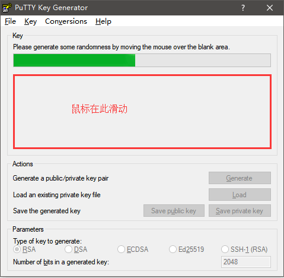

Git常用命令
需要提前下载安装Git客户端
常用操作
注意：git对文件名称大小写不敏感
################## clone ###################
# 克隆项目
git clone <git地址>
# 根据分支克隆
git clone -b <分支名> <git地址>
################### 提交 ####################
# 查看状态
git status
# 提交文件变化到暂存区
# 提交被修改(modified)和被删除(deleted)文件，不包括新文件(new)
git add -u
# 提交新文件(new)和被修改(modified)文件，不包括被删除(deleted)文件
git add .
# 提交所有变化
git add -A
# 提交文件至本地仓库区
git commit –m '<本次提交描述>'
# 以下两条命令相同，合并操作，提交文件变化，提交本地仓库区，等价于 git add . 之后 git commit –m '<本次提交描述>'
git commit –am '<本次提交描述>'
git commit –a –m '<本次提交描述>'
# 将本地版本库的分支推送到远程服务器
# git push <远程服务器> <分支>
git push origin master
# 无特殊配置为提交当前分支
git push
################### 更新 ####################
# 从远程拉取最新内容
git fetch
# 将拉取下来的最新内容合并到当前分支
git merge
# git pull 等价于上面两步操作
# 但会对代码进行破坏性更新，建议使用 git fetch，git merge 进行代码更新
git pull
暂存
切换分支时存在未提交的文件，可以使用暂存
# 添加暂存
git stash
# 查看暂存记录列表
git stash list
# 应用某个存储，但不会把该存储从列表中删除
# git stash apply
git stash apply stash@{0}
# 应用并删除某个存储
# git stash pop
git stash pop stash@{0}
# 删除某个存储
# git stash drop
git stash drop stash@{0}
# 清空所有暂存的 stash
git stash clear
分支
# 显示所有参数使用方法
git branch -h
# 查看所有分支，参数v显示版本号注释等附加信息，a显示所有
git branch -va
# * 开头的为当前本地分支，origin为远程分支
# gh-pages 5c3cbe8 Create CNAME
# * master 20575cc shouye
# remotes/origin/HEAD -> origin/master
# remotes/origin/gh-pages 5c3cbe8 Create CNAME
# remotes/origin/master 20575cc shouye
# remotes/origin/test 20575cc shouye
# 创建分支
git branch <分支名>
# 提交分支到远程服务器
git push origin <分支名>
# 删除本地分支
git branch -d <分支名>
# 删除远程服务器分支
git push origin -d <分支名>
# 切换分支
git checkout <分支名>
# 创建并切换分支
git checkout -b <分支名>
# 拉取远程分支（首次拉取），本地没有
git fetch origin <分支名>
git checkout <分支名>
git 回退版本
# 查看提交记录
git log
#commit <commit id 1> (HEAD -> master, origin/master)
#Author: <用户名> <邮箱>
#Date: <时间>
#
# <commit message 1>
#
#commit <commit id 2>
#Author: <用户名> <邮箱>
#Date: <时间>
#
# <commit message 2>
# 增加--pretty=oneline参数只显示commit id和commit message
git log --pretty=oneline
# <commit id 1> (HEAD -> master, origin/master) <commit message 1>
# <commit id 2> <commit message 2>
# 回退到指定commit id，这一步最好在当前代码 commit 之后操作，commit之后源代码可找回
# --soft 回退到某个版本
# --hard 撤销工作区中所有未提交的修改内容，将暂存区与工作区都回到上一次版本，并删除之前的所有信息提交
git reset --soft <commit id>
# HEAD is now at xxxxxx commit
# 强制提交
git push origin <分支名> --force
git 恢复工作区文件
# 查看更改的文件
git status
# 如果add到暂存区需要reset，重置暂存区最近一次提交
# 如果已经commit，需要将文件回退到commit前
git reset HEAD <文件名>
# 恢复工作区文件
git checkout <文件名>
git 忽略文件（本地）
# git项目根目录，编辑.git/info/exclude，添加需要忽略的文件
vim .git/info/exclude
# 如果已经包含未暂存的更改，需要运行
git update-index --skip-worktree [<file>...]
# 恢复更改跟踪，取消.git/info/exclude中的配置后，需要运行
git update-index --no-skip-worktree [<file>...]
提交gh-pages分支以供展示
# dist为打包后的文件目录
git subtree push --prefix dist origin gh-pages
git log 图形化
git log --graph --pretty="(%p) %h %s"
统计贡献者代码行数
# --author="" 为贡献者，$(git config --get user.email)表示当前用户账号
git log --author="$(git config --get user.email)" --pretty=tformat: --numstat | gawk '{ add += $1; subs += $2; loc += $1 - $2 } END { printf "增加的行数:%s 删除的行数:%s 总行数: %s\n", add, subs, loc }'
使用配置
# 1、配置用户名
# 全局
git config --global user.name '<用户名>'
# 非全局，在项目根目录（.git文件夹所在的目录）
git config user.name '<用户名>'
# 2、配置邮箱
# 全局
git config --global user.email '<登录邮箱>'
# 非全局，在项目根目录（.git文件夹所在的目录）
git config user.email '<登录邮箱>'
# 3、生成密钥，与 步骤2 中邮箱相同
ssh-keygen -t rsa -C '<登录邮箱>'
# (1) Enter file in which to save the key 第一次是密钥地址，输入直接回车
# (2) Enter passphrase 第二次输入是密码
# (3) Enter same passphrase again 第三次输入是确认密码
# 4、将生成的SSH公钥添加到GitLab或者GitHub或者码云等平台中
# (1) 登录之后在 用户设置页面 -> SSH密钥
# (2) 将 id_rsa.pub 中的公钥内容全部复制到 Key 文本域输入框（使用PuTTYgen生成私钥也添加到此处，PuTTYgen使用下面有介绍）
# (3) 标题会自动生成也可以自行修改，添加密钥
# 5、开始使用
Git客户端工具Sourcetree
C:\Users\<用户名>\AppData\Local\Atlassian\SourceTree目录下创建accounts.json，内容如下
[
{
"$id": "1",
"$type": "SourceTree.Api.Host.Identity.Model.IdentityAccount, SourceTree.Api.Host.Identity",
"Authenticate": true,
"HostInstance": {
"$id": "2",
"$type": "SourceTree.Host.Atlassianaccount.AtlassianAccountInstance, SourceTree.Host.AtlassianAccount",
"Host": {
"$id": "3",
"$type": "SourceTree.Host.Atlassianaccount.AtlassianAccountHost, SourceTree.Host.AtlassianAccount",
"Id": "atlassian account"
},
"BaseUrl": "https://id.atlassian.com/"
},
"Credentials": {
"$id": "4",
"$type": "SourceTree.Model.BasicAuthCredentials, SourceTree.Api.Account",
"Username": "",
"Email": null
},
"IsDefault": false
}
]
C:\Users\<用户名>\AppData\Local\Atlassian\SourceTree.exe_Url_*****\x.x.x.x\user.config，在</SourceTree.Properties.Settings>节点前添加以下内容
<setting name="AgreedToEULA" serializeAs="String">
<value>True</value>
</setting>
<setting name="AgreedToEULAVersion" serializeAs="String">
<value>20160201</value>
</setting>
Git客户端工具TortoiseGit
使用PuTTYgen生成密钥


配置使用私钥使用，私钥文件为.ppk文件


Github速度慢优化方法
获取github域名最快访问ip，https://github.com.ipaddress.com/ 添加到hosts文件
github.com
global-ssl.fastly.net
github.global.ssl.fastly.net
<获取的IP> github.com
<获取的IP> global-ssl.fastly.Net
<获取的IP> github.global.ssl.fastly.net
Linux、Mac下修改
/etc/hosts文件，修改完后执行
# 在命令行中输入以下命令使hosts生效 -> Linux（可能需要安装 nscd）
nscd -i hosts
# 在命令行中输入以下命令使hosts生效 -> Mac（>=10.10.4）
sudo killall -HUP mDNSResponder
Windows下修改
c:\Windows\System32\drivers\etc\hosts文件，修改完后执行
# 在命令行中输入以下命令使hosts生效
ipconfig /flushdns
oh_my_zsh git命令别名
| Alias | Command |
|---|---|
| g | git |
| ga | git add |
| gaa | git add --all |
| gapa | git add --patch |
| gau | git add --update |
| gav | git add --verbose |
| gap | git apply |
| gapt | git apply --3way |
| gb | git branch |
| gba | git branch --all |
| gbd | git branch --delete |
| gbda | git branch --no-color --merged | command grep -vE "^([+*]|\s*($(git_main_branch)|$(git_develop_branch))\s*$)" | command xargs git branch --delete 2>/dev/null |
| gbD | git branch --delete --force |
| gbg | git branch -vv | grep ": gone\]" |
| gbgd | git branch --no-color -vv | grep ": gone\]" | awk '"'"'{print $1}'"'"' | xargs git branch -d |
| gbgD | git branch --no-color -vv | grep ": gone\]" | awk '"'"'{print $1}'"'"' | xargs git branch -D |
| gbl | git blame -b -w |
| gbnm | git branch --no-merged |
| gbr | git branch --remote |
| gbs | git bisect |
| gbsb | git bisect bad |
| gbsg | git bisect good |
| gbsr | git bisect reset |
| gbss | git bisect start |
| gc | git commit --verbose |
| gc! | git commit --verbose --amend |
| gcn! | git commit --verbose --no-edit --amend |
| gca | git commit --verbose --all |
| gca! | git commit --verbose --all --amend |
| gcan! | git commit --verbose --all --no-edit --amend |
| gcans! | git commit --verbose --all --signoff --no-edit --amend |
| gcam | git commit --all --message |
| gcas | git commit --all --signoff |
| gcasm | git commit --all --signoff --message |
| gcsm | git commit --signoff --message |
| gcb | git checkout -b |
| gcf | git config --list |
| gcl | git clone --recurse-submodules |
| gccd | git clone --recurse-submodules "$@" && cd "$(basename $\_ .git)" |
| gclean | git clean --interactive -d |
| gpristine | git reset --hard && git clean -dffx |
| gcm | git checkout $(git_main_branch) |
| gcd | git checkout $(git_develop_branch) |
| gcmsg | git commit --message |
| gco | git checkout |
| gcor | git checkout --recurse-submodules |
| gcount | git shortlog --summary -n |
| gcp | git cherry-pick |
| gcpa | git cherry-pick --abort |
| gcpc | git cherry-pick --continue |
| gcs | git commit -S |
| gcss | git commit -S -s |
| gcssm | git commit -S -s -m |
| gd | git diff |
| gdca | git diff --cached |
| gdcw | git diff --cached --word-diff |
| gdct | git describe --tags $(git rev-list --tags --max-count=1) |
| gds | git diff --staged |
| gdt | git diff-tree --no-commit-id --name-only -r |
| gdnolock | git diff $@ ":(exclude)package-lock.json" ":(exclude)\*.lock" |
| gdup | git diff @{upstream} |
| gdv | git diff -w $@ \| view - |
| gdw | git diff --word-diff |
| gf | git fetch |
| gfa | git fetch --all --prune |
| gfg | git ls-files \| grep |
| gfo | git fetch origin |
| gg | git gui citool |
| gga | git gui citool --amend |
| ggf | git push --force origin $(current_branch) |
| ggfl | git push --force-with-lease origin $(current_branch) |
| ggl | git pull origin $(current_branch) |
| ggp | git push origin $(current_branch) |
| ggpnp | ggl && ggp |
| ggpull | git pull origin "$(git_current_branch)" |
| ggpur | ggu |
| ggpush | git push origin "$(git_current_branch)" |
| ggsup | git branch --set-upstream-to=origin/$(git_current_branch) |
| ggu | git pull --rebase origin $(current_branch) |
| gpsup | git push --set-upstream origin $(git_current_branch) |
| gpsupf | git push --set-upstream origin $(git_current_branch) --force-with-lease --force-if-includes (git version >= 2.30) |
| gpsupf | git push --set-upstream origin $(git_current_branch) --force-with-lease (git version < 2.30) |
| ghh | git help |
| gignore | git update-index --assume-unchanged |
| gignored | git ls-files -v \| grep "^[[:lower:]]" |
| git-svn-dcommit-push | git svn dcommit && git push github $(git_main_branch):svntrunk |
| gk | gitk --all --branches &! |
| gke | gitk --all $(git log --walk-reflogs --pretty=%h) &! |
| gl | git pull |
| glg | git log --stat |
| glgp | git log --stat --patch |
| glgg | git log --graph |
| glgga | git log --graph --decorate --all |
| glgm | git log --graph --max-count=10 |
| glo | git log --oneline --decorate |
| glol | git log --graph --pretty='%Cred%h%Creset -%C(auto)%d%Creset %s %Cgreen(%ar) %C(bold blue)<%an>%Creset' |
| glols | git log --graph --pretty='%Cred%h%Creset -%C(auto)%d%Creset %s %Cgreen(%ar) %C(bold blue)<%an>%Creset' --stat |
| glod | git log --graph --pretty='%Cred%h%Creset -%C(auto)%d%Creset %s %Cgreen(%ad) %C(bold blue)<%an>%Creset' |
| glods | git log --graph --pretty='%Cred%h%Creset -%C(auto)%d%Creset %s %Cgreen(%ad) %C(bold blue)<%an>%Creset' --date=short |
| glola | git log --graph --pretty='%Cred%h%Creset -%C(auto)%d%Creset %s %Cgreen(%ar) %C(bold blue)<%an>%Creset' --all |
| glog | git log --oneline --decorate --graph |
| gloga | git log --oneline --decorate --graph --all |
| glp | git log --pretty=\ |
| gm | git merge |
| gms | git merge --squash | |
| gmom | git merge origin/$(git_main_branch) |
| gmtl | git mergetool --no-prompt |
| gmtlvim | git mergetool --no-prompt --tool=vimdiff |
| gmum | git merge upstream/$(git_main_branch) |
| gma | git merge --abort |
| gp | git push |
| gpd | git push --dry-run |
| gpf | git push --force-with-lease --force-if-includes (git version >= 2.30) |
| gpf | git push --force-with-lease (git version < 2.30) |
| gpf! | git push --force |
| gpoat | git push origin --all && git push origin --tags |
| gpod | git push origin --delete |
| gpr | git pull --rebase |
| gpu | git push upstream |
| gpv | git push --verbose |
| gr | git remote |
| gra | git remote add |
| grb | git rebase |
| grba | git rebase --abort |
| grbc | git rebase --continue |
| grbd | git rebase $(git_develop_branch) |
| grbi | git rebase --interactive |
| grbm | git rebase $(git_main_branch) |
| grbom | git rebase origin/$(git_main_branch) |
| grbo | git rebase --onto |
| grbs | git rebase --skip |
| grev | git revert |
| grh | git reset |
| grhh | git reset --hard |
| groh | git reset origin/$(git_current_branch) --hard |
| grm | git rm |
| grmc | git rm --cached |
| grmv | git remote rename |
| grrm | git remote remove |
| grs | git restore |
| grset | git remote set-url |
| grss | git restore --source |
| grst | git restore --staged |
| grt | cd "$(git rev-parse --show-toplevel \|\| echo .)" |
| gru | git reset -- |
| grup | git remote update |
| grv | git remote --verbose |
| gsb | git status --short -b |
| gsd | git svn dcommit |
| gsh | git show |
| gsi | git submodule init |
| gsps | git show --pretty=short --show-signature |
| gsr | git svn rebase |
| gss | git status --short |
| gst | git status |
| gsta | git stash push (git version >= 2.13) |
| gsta | git stash save (git version < 2.13) |
| gstaa | git stash apply |
| gstc | git stash clear |
| gstd | git stash drop |
| gstl | git stash list |
| gstp | git stash pop |
| gsts | git stash show --text |
| gstu | git stash --include-untracked |
| gstall | git stash --all |
| gsu | git submodule update |
| gsw | git switch |
| gswc | git switch -c |
| gswm | git switch $(git_main_branch) |
| gswd | git switch $(git_develop_branch) |
| gts | git tag -s |
| gtv | git tag \| sort -V |
| gtl | gtl(){ git tag --sort=-v:refname -n --list ${1}\* }; noglob gtl |
| gunignore | git update-index --no-assume-unchanged |
| gunwip | git rev-list --max-count=1 --format="%s" HEAD \| grep -q "\-\-wip\-\-" && git reset HEAD~1 |
| gup | git pull --rebase |
| gupv | git pull --rebase --verbose |
| gupa | git pull --rebase --autostash |
| gupav | git pull --rebase --autostash --verbose |
| gupom | git pull --rebase origin $(git_main_branch) |
| gupomi | git pull --rebase=interactive origin $(git_main_branch) |
| glum | git pull upstream $(git_main_branch) |
| gluc | git pull upstream $(git_current_branch) |
| gwch | git whatchanged -p --abbrev-commit --pretty=medium |
| gwip | git add -A; git rm $(git ls-files --deleted) 2> /dev/null; git commit --no-verify --no-gpg-sign --message "--wip-- [skip ci]" |
| gam | git am |
| gamc | git am --continue |
| gams | git am --skip |
| gama | git am --abort |
| gamscp | git am --show-current-patch |
| gwt | git worktree |
| gwtls | git worktree list |
| gwtmv | git worktree move |
| gwtrm | git worktree remove |